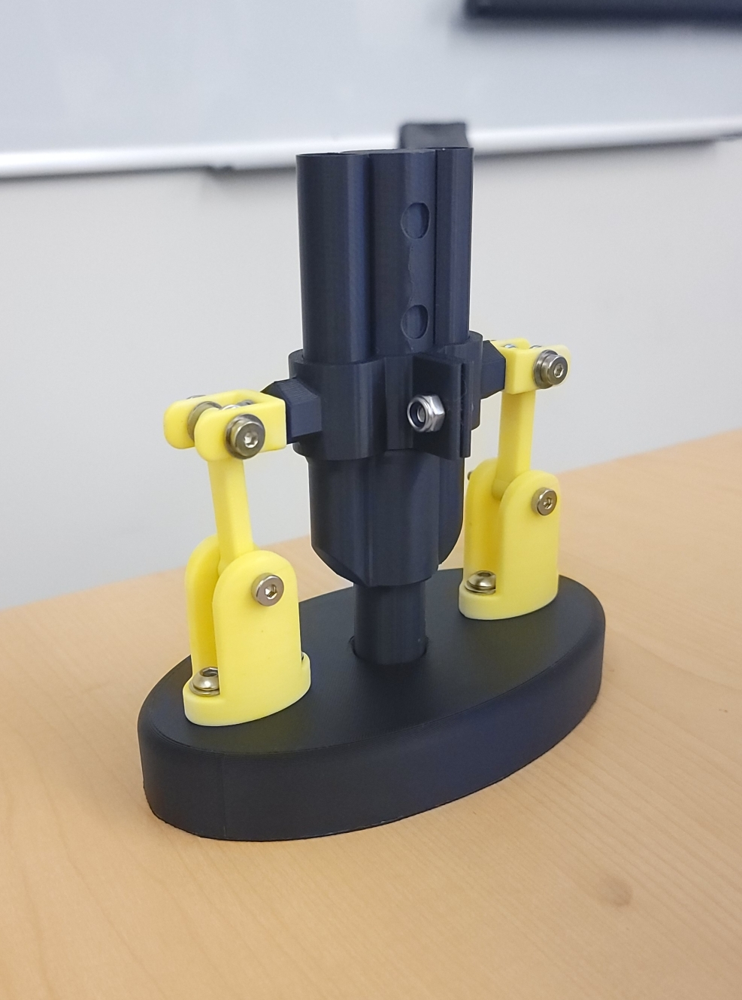

CrutchGuard – Integrated Crutch Attachment
- Relevant Skills: SolidWorks, GD&T, Rapid Prototyping, Iterative Design, Manufacturing Processes, Team Collaboration
Situation
Annually, over 575,000 Americans are prescribed crutches, yet more than 70,000 crutch-related injuries occur, often from slips on wet or uneven surfaces. These secondary accidents risk reinjury or new harm. In our Engineering 29 (GD&T) final project, our team set out to design an attachment—named CrutchGuard—that enhances crutch stability, mimics natural foot motion, and reduces user risk.
Task
The project required us to:- Develop a functional prototype improving crutch grip, balance, and adaptability.
- Apply GD&T standards to ensure precise tolerance specifications between components.
- Prototype using 3D printing and off-the-shelf parts, validating manufacturability and assembly.
- Test stability improvements and document key lessons, challenges, and design refinements.
Action
- Design and Components:
- Component A (Base): Wide platform with anti-slip rubber, increasing ground contact area for stability on uneven terrain.
- Component B (Support): Round design enabling rotational flexibility and smoother crutch motion.
- Component C (Clamp): Adjustable system providing secure attachment to the crutch shaft.
- Component D (Lock Mechanism): Connects clamp and leg, allowing rotational freedom.
- Component E (Leg Connector): Future-proofed for extendability to match different crutch heights.
- Tolerances & Fits:
- Specified interference (LN1) and sliding (RC5) fits across critical interfaces (e.g., Base–Support, Support–Leg) to ensure both secure locking and necessary motion.
- Prototyping:
- Fabricated parts with PLA using a Bambu P1S 3D printer (0.15 mm layer height).
- Integrated off-the-shelf M4 shoulder bolts, locknuts, heat inserts, and threaded nuts for reliable fastening.
- Overcame early failures with Prusa printers (Jacobs Hall, Cory 246) due to limited access and hardware issues.
- Reflection and Iteration:
- Grip layer added to base significantly improved traction.
- Locking mechanism redesigned in concept for quick detachment without tools.
- Proposed curved base shape for smoother walking motion, better simulating foot roll.
Result
- Produced a working prototype that enhanced crutch stability and allowed independent standing.
- Validated GD&T fits through assembly and component interaction.
- Identified improvements: detachable locking, adjustable height lock, and ergonomic curved base.
Conclusion
This project applied GD&T, CAD, and rapid prototyping to solve a real-world accessibility problem. By iterating under time and material constraints, the team gained experience in design-for-manufacturing, tolerance analysis, and teamwork. Future refinements—quick-release locking, adaptive base curvature, and optimized materials—could enable CrutchGuard to scale as a practical safety device for the 575,000+ annual crutch users.Image Gallery:

